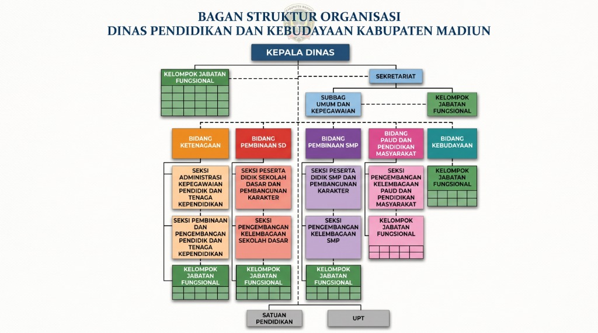

Pusat data, informasi, dan layanan digital resmi Dinas Pendidikan dan Kebudayaan Pemerintah Kabupaten Madiun yang transparan, terintegrasi, dan mudah diakses.
Memuat Berita & Pengumuman Terkini...
Akses terpadu seluruh indikator kinerja, basis data lembaga sekolah, program strategis nasional dan daerah, kurikulum pesilat, serta perlindungan disabilitas di Kabupaten Madiun.
Memuat fitur terpadu...
Klik salah satu kartu modul di bawah untuk membuka data spesifik, tabel capaian, atau dokumentasinya secara khusus.
Terobosan teknologi informasi Dinas Pendidikan dan Kebudayaan Kabupaten Madiun dalam menghadirkan ekosistem pembelajaran yang interaktif, inklusif, dan berkualitas.
“Kolaborasi Cerdas, Layanan Tuntas, Pembelajaran Berkualitas”
Platform inovasi edukasi digital terpadu Dinas Pendidikan dan Kebudayaan Kabupaten Madiun yang menyajikan media belajar ramah anak, kuis wawasan kebangsaan, dan petualangan literasi interaktif.
“Kanal Informasi Pelayanan Pendidikan”
Portal informasi dan pelayanan pendidikan terpadu untuk transparansi program dinas, layanan konsultasi publik, penyampaian aspirasi, dan kemudahan akses data pendidikan Kabupaten Madiun.
“Pengajuan Izin Outdoor Learning Resmi”
Sistem perizinan digital resmi untuk verifikasi administrasi, standarisasi kelaikan rute, dan mitigasi keamanan keselamatan kegiatan belajar di luar kelas (outing class) bagi satuan pendidikan.
Bagan hierarki kelembagaan, kepemimpinan, sekretariat, 5 bidang pembinaan, pengawas sekolah, dan satuan pendidikan pelaksana di lingkungan Dinas Pendidikan dan Kebudayaan Kabupaten Madiun.

Dapatkan jawaban cepat terhadap pertanyaan umum seputar SPMB/PPDB, program beasiswa & KIP, legalisir ijazah, penanganan Zero ATS, hingga perizinan cagar budaya. Anda juga dapat mengirimkan pertanyaan atau aduan langsung ke email resmi kedinasan.
Pilih kategori atau ketik kata kunci untuk menemukan solusi cepat seputar layanan pendidikan dan kebudayaan.
Topik yang Anda cari belum tersedia dalam daftar FAQ populer. Silakan gunakan formulir di bawah ini untuk mengirimkan pertanyaan langsung ke email resmi dinas.
Buat Pertanyaan BaruData yang diisikan akan terhubung langsung ke kotak surat resmi Dinas Pendidikan dan Kebudayaan Kabupaten Madiun: dikbud@madiunkab.go.id. Petugas kami akan memproses dan merespons via email atau nomor kontak Anda.
Arsip lengkap warta informasi kedinasan, siaran pers, pengumuman seleksi, dan dokumentasi agenda kegiatan resmi Dinas Pendidikan dan Kebudayaan Kabupaten Madiun.
Kompilasi dokumen resmi perencanaan strategis jangka menengah, rencana kerja tahunan, indikator kinerja utama, serta laporan akuntabilitas kinerja instansi pemerintah (SAKIP) Dinas Pendidikan dan Kebudayaan Kabupaten Madiun.